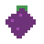
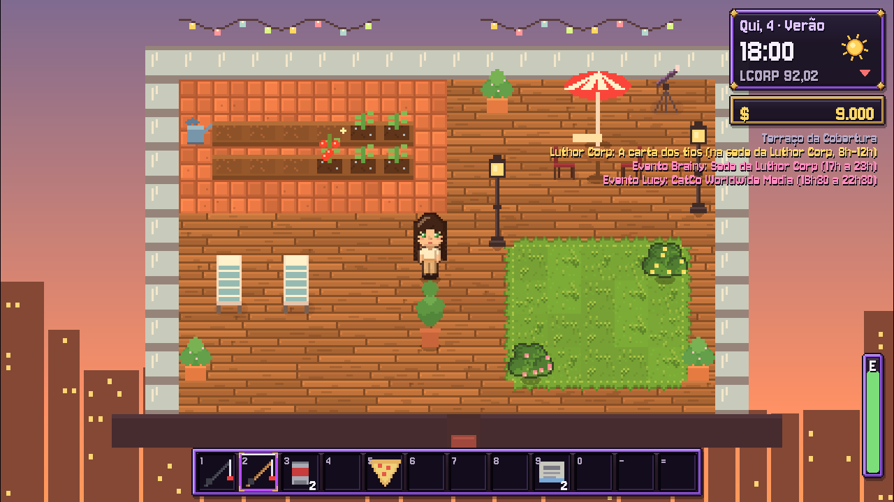

Horta e coletáveis
A horta fica no terraço da cobertura. Compre sementes no Mercado Central, plante num canteiro e regue todo dia. Chuva rega sozinha.
| Semente | Preço | Cresce em | Colheita | Rebrota | Venda |
|---|---|---|---|---|---|
| $10 | 2 dias | Não | — | ||
| Sementes de Tomate | $18 | 3 dias | a cada 2 dias | — | |
| $30 | 4 dias | a cada 2 dias | $45 | ||
| $25 | 4 dias | Não | — | ||
| $40 | 5 dias | a cada 3 dias | $110 | ||
| $35 | 6 dias | Não | $220 |
Coletáveis
Coisinhas que aparecem no chão do parque, do bosque e da praia todas as manhãs. Aperte E para pegar. As Lanternas do Bosque (Fundação Luthor) fazem aparecer mais.
| Coletável | Onde | Estações | Venda |
|---|---|---|---|
| Praia | Ano todo | $25 | |
| Praia | Ano todo | $35 | |
| Praia | Primavera, Verão | $45 | |
| Praia | Verão | $80 | |
| Parque Central | Primavera, Verão | $20 | |
 Amoras | Parque Central | Verão, Outono | $30 |
| Parque Central | Primavera | $150 | |
 Pena de Gaivota | Praia | Ano todo | $15 |
| Praia | Ano todo | $12 | |
| Parque Central | Outono, Inverno | $18 | |
| Parque Central | Primavera, Verão | $10 |
